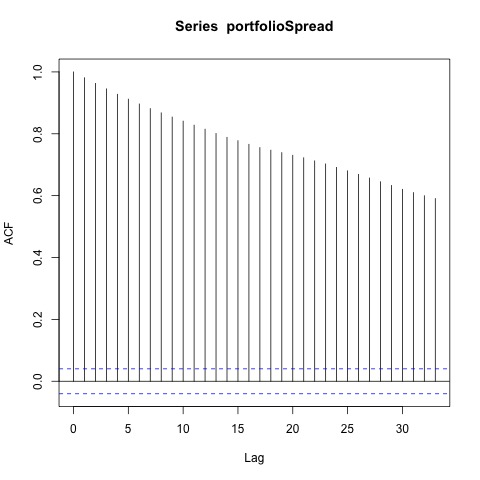
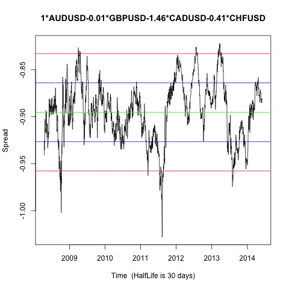

Johansen-Procedure "" "10pct" "5pct" "1pct" "r <= 3 |" 4.93 7.52 9.24 12.97 "r <= 2 |" 12.02 17.85 19.96 24.6 "r <= 1 |" 25.21 32 34.91 41.07 "r = 0 |" 55.61 49.65 53.12 60.16 "AUDUSD.l2" "GBPUSD.l2" "CADUSD.l2" "CHFUSD.l2" "constant" "AUDUSD.l2" 1 1 1 1 1 "GBPUSD.l2" -0.01 1.84 -0.76 0.31 -0.2 "CADUSD.l2" -1.46 -0.92 3.8 -1.34 -1.1 "CHFUSD.l2" -0.4 -1.38 -2.37 0.59 0.84 "constant" 0.89 -1.56 -0.93 -0.8 -0.14
Augmented Dickey-Fuller Test p-value 0.01 